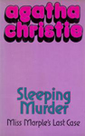
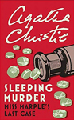
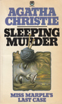
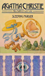
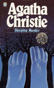
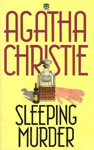

Sleeping Murder: Miss Marple's Last Case is a work of detective fiction by Agatha Christie and first published in the UK by the Collins Crime Club in October 1976 and in the US by Dodd, Mead and Company later in the same year.
Agatha Christie wrote Curtain (Hercule Poirot's last mystery, which concludes the sleuth's career and life) and Sleeping Murder during World War II to be published after her death. Sleeping Murder was written sometime during the Blitz (September 1940 - May 1941). Agatha Christie's literary correspondence files indicate Sleeping Murder was written early in 1940.
The book features Miss Marple. It was the last Christie novel, published posthumously, although not the last one Christie wrote featuring Miss Marple. The story is set in the 1930s, though written during the Second World War. She aids a young couple who choose to uncover events in the wife's past life, and not let sleeping murder lie.






Screen Versions
Sleeping Murder was filmed by the BBC as a 100-minute film in the sixth adaptation (of twelve) in the series Miss Marple starring Joan Hickson as Miss Marple. It was transmitted in two 50-minute parts in January 1987. This adaptation is fairly true to the plot of the novel.
A second television adaptation, set in 1951, was transmitted in February 2006 as part of ITV's Marple, starring Geraldine McEwan. This adaptation had numerous plot changes. The most significant change is at the end it is revealed that Gwenda's mother and stepmother were one and the same person. Claire was a jewel thief and to escape the Indian Police-Detectives, she faked her death and assumed the identity of "Helen Marsden". Other changes include the deletion of some of Helen's suitors, and the addition of a travelling company of performers called The Funnybones, which Helen was performing with at the time of her death. Dr Kennedy became the half-brother of Kelvin's first wife, (whose name is changed from Megan to Claire). Gwenda has an absent fiancé, Charles, rather than a husband. At the end, Gwenda leaves him and becomes engaged to a member of his staff, Hugh Hornbeam. Dr Kennedy does not try to kill Gwenda and does not appear to be crazy, merely that he was in love with his sister and killed her so no one else could have her. Kelvin is not taken to hospital and drugged by Dr Kennedy with Datura. Instead, he is murdered when Dr Kennedy pushes him over a rocky cliff.


Emilio Doorgasingh
Anna-Louise Plowman
Jack Watson
Anna-Louise Plowman